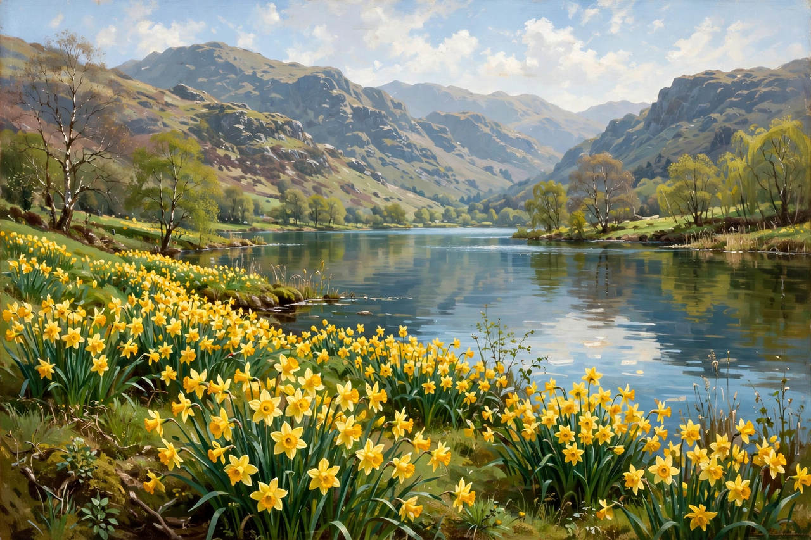

From Wikipedia, the free encyclopedia
| Born | 7 April 1770 Cockermouth, Cumberland, England |
|---|---|
| Died | 23 April 1850 (aged 80) Rydal Mount, Westmorland |
| Occupation | Poet |
| Movement | Romanticism |
| Notable works | Lyrical Ballads, The Prelude, "Lines Written a Few Miles above Tintern Abbey" |
| Poet Laureate | 1843–1850 |
William Wordsworth (7 April 1770 – 23 April 1850) was an English Romantic poet who, with Samuel Taylor Coleridge, helped to launch the Romantic Age in English literature with their joint publication Lyrical Ballads (1798). His masterpiece is generally considered to be The Prelude, a semi-autobiographical account of the growth of a poet's mind.

Wordsworth's daffodils grew beside Ullswater in the Lake District.
Wordsworth was born at Cockermouth in the Lake District, lost his mother at eight and his father at thirteen, and was educated at Hawkshead Grammar School and St John's College, Cambridge. In 1791–92 he travelled in revolutionary France, fell in love with Annette Vallon — who bore his daughter Caroline — and returned home a republican sympathiser; war and poverty separated them. Disillusion with revolutionary violence, and the profound influence of his sister Dorothy, whose journals record their shared walks, shaped his mature poetry. He settled at Dove Cottage, Grasmere, married Mary Hutchinson in 1802, and later moved to Rydal Mount, where he lived until his death. In 1843 he succeeded Southey as Poet Laureate.
The Preface to the second edition of Lyrical Ballads (1800) is a manifesto of Romanticism: poetry should use "the real language of men", and is "the spontaneous overflow of powerful feelings" from "emotion recollected in tranquillity". Wordsworth found in nature a moral and spiritual presence, and in childhood memory — the "spots of time" of The Prelude — a source of renewal. Famous poems include "Lines Written a Few Miles above Tintern Abbey", "I Wandered Lonely as a Cloud" (1807, inspired by Dorothy's journal), the "Lucy" poems, "The World Is Too Much with Us", the Intimations of Immortality Ode, and the sonnets on liberty and duty.
The Prelude, addressed to Coleridge and revised throughout his life, was published only posthumously in 1850. The long philosophical poem The Excursion (1814) confirmed his fame but suggested declining powers; younger Romantics such as Shelley and Keats revered and then rebelled against the conservative elder. Victorian readers made him a sage of nature and consolation, and modern criticism has restored the radical, visionary poet of the 1790s to the centre of Romantic studies.